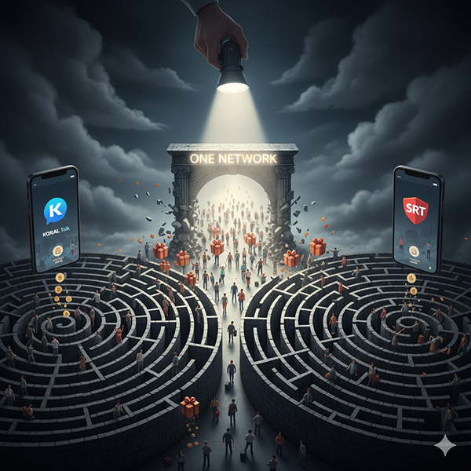
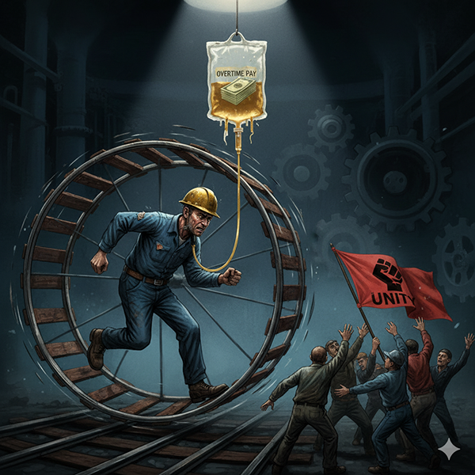

KTX-SRT 분리 체제가 낳은 대가는 장부상의 숫자로만 남지 않는다. 그 대가는 매일 열차를 이용하는 시민들의 불편으로 나타나고, 선로 위 노동자들의 생명을 위협하는 위험으로 구체화된다. 분리 체제가 초래하는 피해는 '회사'의 문제가 아닌, '국민'과 '현장 노동자' 모두의 문제다.
하나의 국토에 두 개의 고속철도라는 기형적인 분리 체제는 대한민국의 철도 네트워크를 두 동강 냈다. KTX만 운행하는 지역의 주민들은 서울 강남이나 경기 동남부로 이동하기 위해 불편한 환승을 감수해야 하는 지역 차별을 겪고 있다. 비록 최근 SRT가 전라선, 경전선, 동해선 일부 구간으로 운행을 확대했지만, 이는 근본적인 해결책이 아닌 미봉책에 불과하다.
코레일의 '코레일톡'과 SRT의 'SRT'로 나뉜 예매 앱은 국민적 혼란을 야기하며, KTX와 SRT 간 환승 할인 부재는 불필요한 비용 부담을 가중시킨다. 여러 연구와 언론 보도를 통해 고속철도를 통합 운영할 경우 차량 운용 효율성이 극대화되어 전체 좌석 공급량이 크게 늘어날 수 있다는 점이 공통적으로 지적된다. 이는 명절 예매난을 완화하고 더 많은 국민에게 편의를 제공할 수 있는 가장 확실한 방법이 통합임을 시사한다.
코레일의 만성적인 적자 구조는 필연적으로 안전 투자 축소와 인력 부족으로 이어진다. 2022년 오봉역에서 발생한 노동자 사망 사고는 한 개인의 실수가 아닌, 예고된 시스템적 참사였다.
사고의 근본적인 배경에는 만성적인 인력 부족 문제가 자리 잡고 있다. 당시 노동조합은 위험한 작업을 2인 1조로 진행하는 문제를 지속적으로 제기했지만, 공사는 비용 문제를 이유로 이를 외면했고 결국 비극이 발생했다. SRT를 유지하기 위해 낭비되는 비용과 코레일의 재정을 갉아먹는 구조적 적자가 결국 현장의 안전을 위협하고 동료의 생명을 앗아간 것이다.
부족한 인력은 우리를 또 다른 함정으로 몰아넣는다. 바로 ‘초과근무수당에 의존하는 임금 구조’이다. 초과근무수당은 우리의 소득을 보전해주는 달콤한 유혹처럼 보일 수 있지만, 이것이야말로 우리의 단결을 약화시키고 현장을 병들게 하는 가장 교묘한 통제 장치이다.
사측은 정규 인력을 충원하는 대신, 초과근무를 통해 ‘땜질식’으로 현장을 유지하는 것이 훨씬 저렴하고 통제하기 쉽다는 사실을 간파하고 있다. 노동자들이 초과근무수당이라는 ‘각성제’에 취해 있는 동안, 인력 부족이라는 근본적인 문제는 해결되지 않고 노동 강도는 점점 더 극심해진다. 피로는 누적되고, 함께 연대하고 투쟁할 시간과 에너지는 소진된다. ‘투쟁에 참여하면 당장 내 월급만 줄어든다’는 패배주의가 스며들기 시작하는 것이다.
분열의 대가는 명확하다. 시민들은 불편을 감수하고, 우리는 목숨을 담보로 일하고 있다. 오봉역의 비극은 분리 체제가 유지되는 한 언제든 되풀이될 수 있는 우리의 현실이다. '초과근무의 덫'은 우리의 건강과 삶을 갉아먹고, 노동조합의 투쟁 동력을 약화시켜 사측의 지배력을 강화하는 악순환을 만들어낸다. 이 고리를 끊어내기 위해서는 초과근무가 없어도 안정적인 생활이 가능한 ‘정상적인 임금 구조’를 만들어야 하며, 그 전제 조건은 바로 충분한 인력 충원이다. 고속철도 통합을 통해 낭비되는 비용을 절감하고 코레일의 재정 구조를 정상화시켜야만, 비로소 우리는 만성적인 인력 부족의 늪에서 벗어나 제대로 된 인력 충원을 요구할 수 있는 강력한 명분을 얻게 될 것이다. 이것은 더 이상 선택의 문제가 아니다. 우리의 생명과 존엄을 지키기 위한 유일한 길이다. 이번 쟁의행위 찬반투표는 바로 이 절박함에 대한 응답이 되어야 한다.
목차로 돌아가기